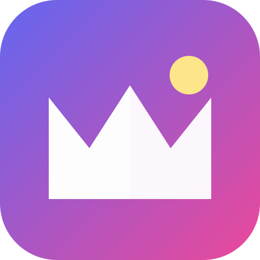

Memora
Your photos and videos, beautifully organized, 100% offline. Stream them to your TV without any cloud.
Download for Windows
View on GitHub
Free and open source (MIT). Windows 10/11, 64-bit.
Full disclosure: this app is 100% vibe coded.
I built Memora entirely by prompting an AI coding assistant (Claude Code) and reviewing the results, without writing the code by hand.
It works well for me, but it is young. Keep backups (Memora never modifies your originals), and please report bugs on GitHub.
Private by design
No accounts, no cloud, no telemetry. Memora indexes your folders in place and never moves or edits your files.
Google Photos feel
Timeline with date scrubber, albums, favorites, search, trash, and a full-screen viewer for photos and videos.
Stream to your TV
Appears as a media server on your smart TV (DLNA/UPnP), plus a remote-friendly web page at /tv.
Places and map
See where photos were taken from GPS data, using an offline map. Nothing is looked up online.
Duplicate finder
Finds exact and near-duplicate photos and lets you clean up in one click (to the Recycle Bin).
HEIC and video
iPhone HEIC photos and common video formats, with automatic conversion when a codec isn't supported.
Try it in 3 minutes
- Install FFmpeg:
winget install Gyan.FFmpeg
- Download the installer and run it. If SmartScreen warns (the app isn't code-signed yet), choose More info, then Run anyway.
- Open Memora, go to Settings, add a photo folder, and watch your library fill in.
- Optional: turn on TV sharing in Settings, then pick Memora from your TV's media sources.
Roadmap
- Now (v0.1): timeline, albums, search, map, duplicates, TV streaming
- Next: bundled FFmpeg, RAW support, signed installer
- Soon: offline face grouping, natural-language search ("dog on a beach"), memories
- Later: encrypted private vault, basic editing, backup to NAS
Read the full roadmap